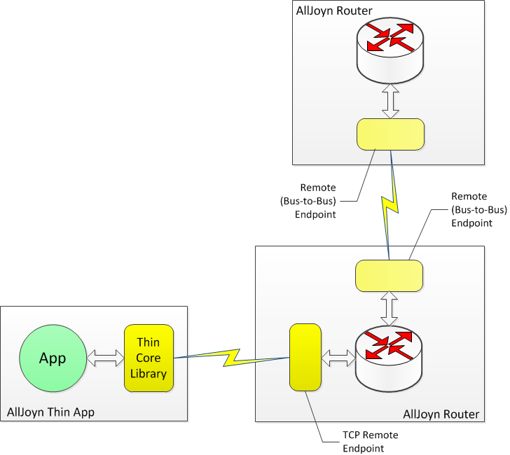
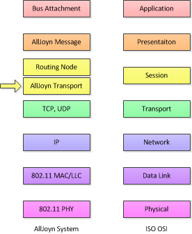
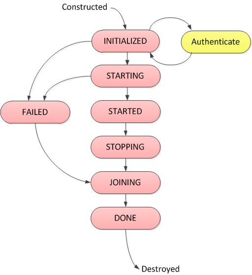
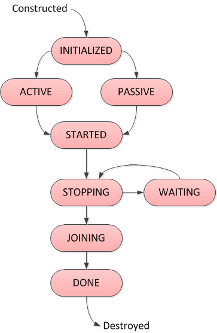
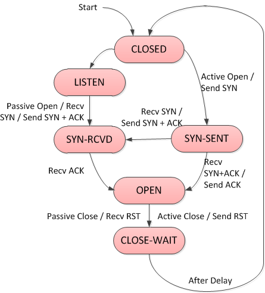

AllJoyn™ Transport
Overview
AllJoyn Transport is an abstraction for a concrete mechanism that is used to move AllJoyn Messages (corresponding to a method call, method reply, a property get/set or a signal) between AllJoyn applications.
The AllJoyn Transport provides the following fundamental
pieces of functionality:
The ability to create and destroy connections between
AllJoyn applications (through AllJoyn routers) and between
AllJoyn applications and routers.
The ability to reliably send and receive AllJoyn Messages
between AllJoyn applications and routers.
* Optionally, to provide advertisement and discovery services
appropriate to the underlying network technology.
The AllJoyn Transport supports connections establishment and delivering messages over multiple underlying physical transport layers including TCP, UDP and local UNIX transport. A complete list of underlying transports supported by the AllJoyn Transport is captured in AllJoyn TransportMask definition. An application can specify which underlying transport to be used for connection establishment and message delivery.
Based on the type of connection endpoints, AllJoyn Transport functionality can be divided into the following categories: Local AllJoyn Transports: Local AllJoyn Transports are designed to essentially provide communication between Core Library and associated AllJoyn Router. This supports connection establishment and message routing between Application and the Router. Details on Local Transports are captured in Local AllJoyn Transports. Bus-to-Bus AllJoyn Transports: These AllJoyn Transports enable connection establishment and message routing between AllJoyn routers. Details on Bus-to-Bus Transports are captured in Bus-to-Bus AllJoyn Transports.
Endpoints usage in AllJoyn Transports
As mentioned in AllJoyn endpoints, the AllJoyn Transport uses endpoints to establish connections and route messages across applications and routers. An AllJoyn Endpoint is analogous to a socket endpoint as used in socket programming. An AllJoyn Endpoint is one side of an AllJoyn communication link. The AllJoyn communication link could be between an Application and an AllJoyn router, or it could be between two AllJoyn routers.
The broad classification of endpoints in the AllJoyn system are listed below: Local Endpoint: A local endpoint represents a connection to self. It is used in the Core Library to provide a connection to the application itself and used in the AllJoyn Router to provide connection to the router itself. A local endpoint represents a connection within the same process. Remote Endpoint: A remote endpoint represents a connection between the application and the AllJoyn router. Messages destined to an applications get routed to its remote endpoint. A specialized type of remote endpoint called "Bus-to-Bus" endpoint represents connection between two AllJoyn Routers. A remote endpoint represents a connection between two processes.
The following figure shows the concepts of local and remote endpoints.

Figure: Local and remote endpoints
The figure illustrates a hypothetical connection between an AllJoyn application
and a preinstalled Router. The AllJoyn application talks to a Core Library
that provides the gateway to the larger AllJoyn distributed bus.
The Core Library has two main connections: the connection to the
application, which is provided through what is called the Local Endpoint,
and the connection to the Router, which is represented by a Remote Endpoint.
The AllJoyn Router also has a corresponding Remote Endpoint to represent the endpoint of the communication link with the Core Library for routing messages. The Local endpoint within the AllJoyn Router represents a connection to the router for routing control messages destined for the router.
Multiple applications can connect to a single AllJoyn Router in a distributed bus architecture. An AllJoyn router maintains a remote endpoint to each connected application as shown in the following figure (AllJoyn router wiht multiple remote endpoints).

Figure: AllJoyn router with multiple remote endpoints
Both the Core Library and the router maintain remote endpoints, however they differ in terms of message routing functionality - an AllJoyn Router can move (route) messages between Remote Endpoints, whereas a Core Library only moves messages between exactly one Local and exactly one Remote Endpoint.
The AllJoyn system supports a fully distributed bus configuration, where a router communicates with other routers to join bus segments into a single distributed AllJoyn bus as shown in the following figure.

Figure: AllJoyn distributed bus with bus-to-bus endpoints
In this figure, one bus segment comprising an AllJoyn Router and two Applications is shown in the top half. Another bus segment, also with an AllJoyn Router and two Applications, is shown in the bottom half of the figure.
The two bus segments are connected together via remote endpoints called Bus-to-Bus Endpoints. Each router maintains a Bus-to-Bus Endpoint for every other router it is connected to. In the figure, One Bus-to-Bus Endpoint represents the connection to the upper Routing Node and another Bus-to-Bus Endpoint represents the connection to the lower Routing Node.
The Remote Endpoints are paired with an underlying communication mechanism as part of the associated AllJoyn Transport. For example, the Bus-to-Bus Endpoints in the Routing Nodes may be managed by the TCP Transport or the UDP Transport, which also handles the details of moving Messages from one end (Endpoint) of the implied connection to another.
In the case of the Remote Endpoints that connect the Core Library to the AllJoyn Router, the underlying communication mechanism could be different based on host environments. For example, a UNIX domain sockets implementation is used on Linux systems, while a TCP implementation is used on Windows systems.
Thin Core Library Endpoints
The Thin Core Library (TCL) makes use of the TCP Transport, however its implementation is quite different than the regular TCP Transport connection between a Core Library and AllJoyn Router.
On the TCL, there is no explicit breaking out of a Remote Endpoint and a Local Endpoint. The TCL provides minimal implementation of the functionality required to connect and communicate with the TCP Remote Endpoint at the Alljoyn Router hosted on another AllJoyn device.
On the Routing Node side, a Thin Library device connects as if it was any local Core Library connecting using a local TCP loopback connection.
NOTE: This is how Bus Attachments connect to Routing Nodes in the Windows environment. The TCP transport is used for the connection, but the data does not actually travel across the network; but rather is "looped back" and sent back up the networking stack before being sent out on a connected IP network.
The Thin Library Endpoint usage is captured in the following figure.

Figure: Thin Core Library Endpoint
AllJoyn Transport in Networking Model
Although the primary task of an AllJoyn transport is to transport, or move, AllJoyn Messages from one endpoint to another, it is important to distinguish the AllJoyn Transport from the concept of transport layer (layer 4) in the International Standards Organization Open Systems Interconnection (ISO/OSI) 7-layer model.
The following figure shows where AllJoyn Transports fit in the 7-layer ISO/OSI model.

Figure: AllJoyn transport in the ISO/OSI 7-layer model
Underneath the Application Logic, there exists an AllJoyn Message layer which is responsible for marshaling and unmarshaling of AllJoyn messages (Signals and Method Calls). This layer can be thought of as residing in the presentation layer (layer 6) of the ISO/OSI model.
These AllJoyn messages are routed to their intended destination by the AllJoyn Transport layer. Since the AllJoyn Transport layer manages connections across applications and AllJoyn routers in the network, it can be thought of corresponding to the session layer (layer 5) of the ISO/OSI model. AllJoyn Transports make use of layer 4 transports like TCP or UDP in order to manage the actual movement of AllJoyn messages between various network entities.
Since an AllJoyn Transport encapsulates the functions of moving
data sequences, establishing connections, advertisement and discovery,
there are separate AllJoyn Transports for separate underlying
transport mechanisms.
The AllJoyn TCP Transport uses TCP/IP as the mechanism for moving data.
The AllJoyn UDP Transport uses UDP/IP as the mechanism for moving data.
The AllJoyn Bluetooth (BT) Transport does the same for Bluetooth
connections.
The AllJoyn Local Transport uses UNIX domain sockets.
The name given to an AllJoyn transport typically echoes the method used in the underlying OSI layer 4 mechanism.
An AllJoyn applications may select the AllJoyn Transport that is actually used by choosing one or more TransportMask bits in the appropriate AllJoyn APIs. The currently available TransportMask bits are shown in the following table.
AllJoyn TransportMask definition
| Transport name | Value | Description |
|---|---|---|
| TRANSPORT_NONE | 0x0000 | No transport. |
| TRANSPORT_LOCAL | 0x0001 | The local transport. |
| TRANSPORT_TCP | 0x0004 | Transport using TCP as the underlying mechanism. |
| TRANSPORT_UDP | 0x0100 | Transport using UDP as the underlying mechanism. |
| TRANSPORT_EXPERIMENTAL | 0x8000 | Select a release-specific experimental transport. |
| TRANSPORT_IP | 0x0104 | Allow the system to decide between TCP or UDP. |
| TRANSPORT_ANY | 0x0105 | Allow the system to choose any appropriate transport. |
If an AllJoyn application desires to only use TCP as the underlying layer 4 mechanism, it can do so by specifying TRANSPORT_TCP in advertisement, discovery and Session join and bind options. If an application desires only that an IP-based transport be used, it can specify TRANSPORT_IP and allow the AllJoyn system to select between TCP and UDP, for example.
Each transport establishes and maintains connectivity based on the underlying physical transport it supports. Based on the type of underlying physical transport, the actual connectivity between two nodes in an AllJoyn network can be either single-hop or multi-hop. An AllJoyn distributed bus is basically an overlay network whose topology does not necessarily map directly to the topology of the underlying network. If an application has no preference, it can provide TRANSPORT_ANY and allow the AllJoyn system to determine which transport to use.
Local AllJoyn Transports
AllJoyn Local Transports is a broad grouping of AllJoyn Transports that are designed to essentially provide communication between the Core Library and their associated AllJoyn Routers. The following Local Transports are used in the AllJoyn system: Null Transport UNIX Domain Socket Transport * TCP Transport
Null Transport
The simplest of the local transports is the Null Transport. This transport is designed to provide a connection between a Core Library and a Bundled Router, both of which reside in a common process. One endpoint of the Null Transport is directly tied to the other side via function calls. There is really no Transport in the communication path between the Core Library and router in this case, the link is "jumpered" together using a direct function call interface.
UNIX Domain Sockets Transport
The UNIX Domain Sockets Transport is used in Posix systems to provide an inter-process connection (IPC) between a Core Library and a preinstalled AllJoyn Router. Since this is a local transport, there is no requirement to support multiple endpoints, or to advertise and discover. The implementation of this local transport is split across the Core Library and the AllJoyn Router.
TCP Transport
The TCP Transport is used in Windows systems to provide an inter-process connection between a Core Library and a preinstalled AllJoyn Router. Since there is no requirement to support multiple endpoints, nor to advertise and discover, the implementation of the TCP Transport for the Core Library is considerably simplified when compared to the Bus-to-Bus version of the TCP Transport. For a discussion on the details of the TCP Transport, see TCP Transport mechanism.
Bus-to-Bus AllJoyn Transports
The Bus-to-Bus AllJoyn Transports enable connection establishment and message routing between AllJoyn routers. The most commonly used Bus-to-Bus transports in the AllJoyn system are based on the underlying IP-based transport mechanisms. These include TCP Transport and UDP Transport.
As mentioned earlier, an application can specify which AllJoyn Transport should be used for connection setup and message delivery. If not specified by the App, AllJoyn router makes a selection for the transport to be used. Both TCP Transport and UDP Transport are effective AllJoyn Transports. There are many trade-offs which can be considered when making a selection between the two. In general the times at which one would prefer to use the AllJoyn TCP Transport or the AllJoyn UDP Transport can be loosely modeled on when one might prefer TCP/IP over UDP/IP.
The following table summarizes the performance of AllJoyn TCP Transport and AllJoyn UDP Transport by comparing certain system criteria.
Performance of AllJoyn TCP Transport versus UDP Transport
| System Criteria | TCP Transport | UDP Transport | Description |
|---|---|---|---|
| Number of Connections Supported | Low to medium | High | Due to high file descriptor usage, TCP Transport cannot support a very large number of simultaneous connections. UDP Transport uses only a single file descriptor for multiple connections, so it can support large number of simultaneous connections without reaching file descriptors system limit. |
| Memory Usage | Moderate | High | Since UDP Transport has to provide the reliability support, it requires much higher memory usage. |
| TTL-based Message Expiration | Not possible | Supported | UDP Transport uses the AllJoyn Reliable Datagram Protocol (ARDP), which supports TTL-based message expiration. |
| Types of Data Transfer | Performs best for bulk data transfer | Performs best for intermittent short data transfer | Default socket buffers for Layer 4 TCP connections are typically much larger than those for UDP connections. As a result, TCP performs much better for bulk data transfer. |
The following table captures some of the use case scenarios with the preferred transport selection between TCP Transport and UDP Transport, based on trade-offs outlined in Performance of AllJoyn TCP Transport versus UDP Transport.
AllJoyn use cases showing TCP vs UDP Transport selection
| Use Cases | TCP Transport | UDP Transport |
|---|---|---|
| Dominant traffic is method calls | X | |
| Dominant traffic is bulk data transfer | X | |
| AllJoyn messages have TTL associated | X | |
| Large number of simultaneous sessions with intermittent RPC calls | X | |
| Very dirty RF conditions | X |
Details on AllJoyn TCP Transport and UDP Transport are captured in the following sections.
TCP Transport mechanism
As mentioned previously, the AllJoyn TCP Transport takes its name from the TCP/IP layer 4 transport mechanism it uses. Since TCP provides a reliable data stream guarantee, the TCP Transport must only provide enough mechanism to translate AllJoyn messages to and from byte streams.
TCP Transport data plane architecture
Each connection that uses the TCP Transport has an associated TCP Endpoint, TCP Stream, and TCP socket as shown in the following figure.

Figure: TCP transport data plane internal architecture
The routing functionality of a Routing Node connects to a TCP Endpoint, which represents a Remote Endpoint for a TCP Transport connection. The TCP Endpoint translates AllJoyn messages to and from the byte-stream representation using a TCP Stream component. TCP Stream delivers and received data over a TCP socket.
TCP endpoint lifecycle
A TCP Endpoint goes through multiple states in the overall lifecycle of the Endpoint. The states and transitions for the TCP Endpoint are shown in the following figure.

Figure: TCP endpoint lifecycle states
TCP Endpoints are created either as a result of an active connection request or an incoming call for a passive connection. The TCP Endpoint maintains information about whether the precipitating event was an active or passive connection.
A TCP Endpoint follows the basic lifetime of an AllJoyn Thread.
It is first created in the INITIALIZED state. Prior to being used
in the AllJoyn system, a TCP Endpoint must be authenticated.
This is a done as a separate step and is discussed in
TCP Endpoint authentication phase.
If the authentication succeeds, the TCP Endpoint thread is asked
to start running, at which point it enters the STARTING state.
If the authentication fails, the TCP Endpoint transitions into the
FAILED state and is then ready for cleanup.
As soon as the Thread(s) required to support a newly created
and authenticated TCP Endpoint is actually running, the Endpoint
enters the STARTED state. In this state, the TCP Endpoint is
registered with the Router and therefore data can be transferred
through the Endpoint. Once the connection is no longer needed,
the Endpoint method Stop() is called, and the Endpoint enters
the STOPPING state. Once all threads which may be running in
the Endpoint have exited, the Endpoint enters into a JOINING state,
where any threads associated with the Endpoint are joined (in the
sense of a Posix thread join operation). The Endpoint is then
unregistered from the AllJoyn Router. When the threading-related
resources in an endpoint are cleaned up, the endpoint enters the
DONE state at which time it can be removed from the system and deleted.
TCP Endpoint authentication phase
As mentioned above, TCP Endpoints must transition through an authentication phase that is required to complete before Messages are allowed to be transferred though the endpoint.This authentication phase is handled by a separate thread, and is shown in the following figure. The authentication process is begun when the TCP Endpoint enters the INTIALIZED state.

Figure: TCP endpoint authentication states
TCP Endpoint authentication uses the Simple Authentication and Security Layer (SASL) framework "ANONYMOUS" mechanism. While in the actual AUTHENTICATING state, the TCP Stream runs in a string-transfer mode in order to transfer the SASL challenges and responses. If the SASL exchange fails, authentication transitions to the FAILED state which, in turn, drives the TCP Endpoint state to change to FAILED.
If the SASL exchange succeeds, authentication transitions to the SUCCEEDED state and this, in turn, drives the TCP Endpoint to transition to the STARTING state. When the TCP Endpoint transitions to STARTED state the associated TCP Stream will make a mode switch and begin sending and receiving AllJoyn Messages instead of text strings.
As soon as the FAILED or SUCCEEDED determination is made, and the appropriate Endpoint lifetime actions are taken, the endpoint authentication thread exits and causes the authentication machine transition to DONE.
UDP Transport mechanism
The AllJoyn UDP Transport, as its name implies, uses the UDP/IP protocol to move AllJoyn Messages from one host to another. Since UDP does not provide a reliability guarantee, the UDP Transport must provide some mechanism to provide a reliable Message delivery guarantee. The UDP Transport uses the AllJoyn Reliable Datagram Protocol (ARDP) to provide reliable delivery of messages. ARDP is based loosely on the Reliable Data Protocol (RDP) as appears in RFC 908 (version 1) and RFC 1151 (version 2).
UDP Transport data plane architecture
Architecturally, the UDP Transport can be split into two large components: the routing functionality of a Router Node connects to a so-called UDP Endpoint, and the networking functionality of the UDP Transport that is accessed through ARDP.
The UDP Endpoint is the primary data plane interface between the Routing Node and the UDP Transport. From the Routing Node point of view, each UDP Transport connection is represented by a UDP Endpoint. Each UDP Endpoint has an associated ARDP stream that converts AllJoyn messages to ARDP datagrams. The UDP Transport data plane architecture is captured in the following figure.

Figure: UDP transport data plane internal architecture
The ARDP Stream component converts from the notion of a Message stream to a stream of datagrams and, in turn, talks to an ARDP Connection. The ARDP Connection provides the end-to-end state information required to establish the reliability guarantees, and talks to a single UDP socket that is shared among the various ARDP connections managed by the UDP Transport.
UDP Endpoint lifecycle
UDP Endpoints go through a well-defined lifecycle as shown in the following figure.

Figure: UDP endpoint lifecycle
Endpoints are constructed because of either an Active or a Passive connection request. Similar to the TCP concept, an Active connection is an outgoing connection that is actively started on the local side. A Passive connection is an incoming connection that was actively started on the remote side. The ARDP protocol has a three-way handshake similar to that provided by RDP and TCP. The entity that issues the SYN request enters into ACTIVE state and the entity which responds with a SYN+ACK enters into PASSIVE state.
Unlike TCP and RDP, ARDP provides additional information as data in the SYN and SYN+ACK packets. During the SYN, SYN+ACK, ACK exchange (happening in ACTIVE and PASSIVE states), the involved endpoints are authenticating and identifying themselves to their remote counterparts. Once this phase has completed, the endpoints enter the STARTED state when the endpoint is registered with the Routing Node as being ready. The STARTED state is one in which AllJoyn Messages may be sent and received.
Eventually, a connection may be stopped either as a result of a local
or remote disconnect event. A disconnect is initiated by the Routing
function making a Stop() call into the UDP Endpoint. This causes
a state transition from STARTED to STOPPING. For a local disconnect
event, an immediate transition is made to the WAITING state.
This allows all queued and in-flight Messages to be sent to the
remote side before an ARDP Disconnect is executed.
NOTE: Unlike TCP, there is no four-way ending handshake in ARDP - this is handled at the Session level in the UDP Transport state machine.
Once all data is transferred and acknowledged, a transition is made back to the STOPPING state. In STOPPING state, the various threads are notified that the endpoint is closing down. Once the threads are verified as having left, the endpoint transitions into the JOINING state. This is where resources are freed and any threads that may have been associated to the endpoint are joined (in the sense of a Posix thread join operation). The last part of the resource management is to unregister the endpoint from the Routing Node. When this is complete, the endpoint enters the DONE state and becomes ready for deletion by the endpoint management function.
ARDP state machine
The ARDP is a close relative of RDP which is documented in RFC-908 (version 1) and RFC-1151 (version 2). At the heart of the ARDP is the ARDP connection state machine. Although similar to the TCP state machine, the ARDP machine is simpler, requiring only six states as shown in the following figure.

Figure: ARDP state machine
As in TCP, connections may be started actively or passively.
An active, or outgoing connection begins by creating a UDP Endpoint
and transitioning it to the ACTIVE state. The endpoint provides
an "introduction" Message and passes it to ARDP, which responds
by creating a connection, adding the "introduction" to a SYN
packet and sending it. After sending the SYN packet, the local
ARDP connection enters the SYN-SENT state. The remote ARDP which
is in the LISTEN state, receives the SYN and calls back into the
UDP Transport, providing the "introduction" and notifying
that a connection request has been received. If the UDP Transport
determines that a connection should not be undertaken, ARDP
is notified and sends an RST pack to abort the connection.
If the UDP Transport determines that the connection should be brought up, it creates a new UDP Endpoint in PASSIVE state and responds to the ARDP callback with its own "introduction response". The passive side then enters the UDP Endpoint PASSIVE state and the ARDP sends the "introduction response" back to the active side in a SYN+ACK packet. When the active side receives the SYN-ACK packet, the ARDP state machine sends the final ACK packet, transitions to OPEN state and notifies the UDP Endpoint which, in turn, transitions to STARTED state. The active side is then ready to send and receive data. When the passive side receives the final ACK packet, its three-way handshake is complete.
It transitions into the OPEN state and notifies the UDP Endpoint which transitions into the STARTED state. At this point, both sides are ready to send and receive data.
Since it is possible that a failure happens somewhere in the exchange between the local UDP Endpoint, the local ARDP, the remote ARDP and the remote UDP Endpoint, both sides have watchdog timers that abort the process if it does not complete in a timely manner.
As described above, there is no orderly shutdown of connections in the ARDP. This is accomplished in the UDP Endpoint state machine. Transitions out of ARDP OPEN state are done by receiving or sending RST packets. To avoid problems with reuse of ARDP ports, a CLOSE_WAIT state is implemented similar to that of TCP.
ARDP packet format
Details of the ARDP packet formats are available in RFC 908 and RFC 1151. Extensions to support granularity of AllJoyn Message instead of UDP Datagrams and also dropping of in-flight Messages based on TTL expiration required changing SYN and DATA packet formats.
The following table shows the ARDP SYN packet format. A delayed ACK timeout was added to support functionality similar to delayed ACK as used in TCP. A variable length data and an associated Data Length field was also added. The SYN+ACK packet is returned in this format, but with the ACK bit set.
ARDP SYN Packet Format
| Fields |
|---|
| FLAGS (8 bits) / Header Length (8 bits) |
| Source Port (16 bits) |
| Destination Port (16 bits) |
| Data Length (16 bits) |
| Initial Sequence (32 bits) |
| Acknowledgement (32 bits) |
| Local Receive Window Size (16 bits) |
| Maximum Size of Receivable Datagram (16 bits) |
| Delayed ACK Timeout (32 bits) |
| Data (variable length) |
The following table shows the ARDP DATA packet format. The format is substantially similar to that described by RFC 908 and RFC 1151, but several fields were added to support new features. Since ARDP is designed to support sending and receiving AllJoyn Messages, which can span three 65535-byte UDP datagrams, the concept of a Message fragment was added. This necessitated adding a fragment count field and a start-of-message sequence number to identify the sequence number corresponding to the first UDP datagram in an AllJoyn Message. A Time-to-Live field was also added to support expiring AllJoyn Messages with a finite time to live; and in order to coordinate expiration of Messages, which may be in the process of being retransmitted, the Acknowledge-Next field was added.
ARDP data packet format
| Fields |
|---|
| FLAGS (8 bits) / Header Length (8 bits) |
| Source Port (16 bits) |
| Destination Port (16 bits) |
| Data Length (16 bits) |
| Sequence Number of Current Segment (32 bits) |
| Acknowledge Number of Last In-Sequence Segment (32 bits) |
| Time to Live (32 bits) |
| Last Consumed Sequence Number (32 bits) |
| Acknowledge-Next (32 bits) |
| Start-of-Message Sequence (32 bits) |
| Fragment Count (16 bits) |
| Extended ACK Bitmask (variable length) |
| Data (variable length) |
UDP transport configuration
ARDP is a flexible protocol, and so there are a number of configurable parameters used. These parameters are settable via the AllJoyn Router configuration file.
| Parameter name | Description | Default value |
|---|---|---|
| udp_connect_timeout | When an initial ARDP connection is attempted, the precipitating SYN packet may be lost. If, after some time, the foreign host does not respond, the connection must be attempted again. This value is the time period that ARDP waits before attempting to resend the SYN packet. | 1000 msec |
| udp_connect_retries | When an initial ARDP connection is attempted, the precipitating SYN packet may be lost. If, after some time, the foreign host does not respond, the connection must be attempted again. This value is the number of times that ARDP will try to resent SYN packet before giving up. | 10 |
| udp_initial_data_timeout | When a data ARDP segment is sent, an RTO timer is started that determines when to resend the segment if an acknowledgment is not received. ARDP performs adaptive SRTT and RTO estimation using the TCP algorithm from RFC 6298. This parameter defines an initial RTO value which is used for a data segment only when no RTT estimates are available. | 1000 msec |
| udp_total_data_retry_timeout | The overall time period for which a data segment should be retried before giving up and disconnecting the associated ARDP connection. | 10000 msec |
| udp_min_data_retries | The minimum number of times a given ARDP data segment will be retransmitted. A data segment might be transmitted for more number of times than this value over the udp_total_data_retry_period. | 5 |
| udp_persist_interval | When the advertised window size on the foreign host goes to zero, it stops the (local) sender from transmitting data until the window becomes nonzero. Since ARDP does not reliably send ACK packets, it is possible to lose an ACK packet that reopens the window. In that case, the local and foreign sides could deadlock: the foreign side to receive data and the sender waiting for an ACK with a new window size. ARDP supports sending zero window probes (NUL packet) if it does not get update to the window after receiving a zero window ACK. The zero window probes are sent following an exponential backoff schedule. This parameter defines initial persist interval used as first timeout for the zero window schedule. | 1000 msec |
| udp_total_app_timeout | The overall time period for which zero window probes should be sent before the associated ARDP connection is declared broken. | 30000 msec |
| udp_link_timeout | ARDP is very interested in quickly determining when a link has gone down, idle or not. The idea is to guarantee that some data is present on the link at least once over a given interval. This may be data, ACK for that data, or a special NUL keep-alive packet.This parameter provides the default overall timeout period during which a broken link for a connection must be detected. A link timeout is used to compute the keep-alive interval for sending periodic keep-alive probes. This value is used only if the link timeout was not set by the app, otherwise the link timeout from the app is used. | 30000 msec |
| udp_keepalive_retries | Provides the total number of times keep-alive probes will be sent before declaring the link as broken and terminating the ARDP connection. | 5 |
| udp_fast_retransmit_ack_counter | Similar to TCP, ARDP supports fast retransmission of segments based on the out-or-order EACKs (Enhanced ACKs) received. This value defines how many out-of-order EACKs should be received before ARDP performs the retransmission. A segment is fast retransmitted only once. | 1 |
| udp_timewait_timer | Amount of time that a connection should remain in the RDP Close_Wait state, to ensure that all outstanding packets that might be wandering around the network have died out for that connection. This behavior ensures that the port pair defining the ARDP connection cannot be reused for twice the expected lifetime of a datagram and therefore datagrams from an earlier incarnation of a connection cannot interfere with a current connection. | 1000 msec |
| udp_segbmax | Maximum size of an ARDP segment as negotiated during connection setup. Since ARDP runs on top of UDP, this is determined based on the max UDP packet size. Since the maximum datagram size in UDP is 65535 bytes, the most efficient / maximum ARDP message size is the maximum size of UDP packet. Larger-sized AllJoyn messages are fragmented into the multiple segments required to carry those messages. | 65507 |
| udp_segmax | Maximum number of outstanding ARDP segments the receiver is willing to accept as negotiated during connection setup. This value governs how many segments can be in the flight and hence impacts the overall achieved throughput. The SEGMAX unit is ARDP segments. ARDP supports flow control through dynamic windowing in the message header. When data is received by ARDP and "checked in" to the ARDP receive queue, it is immediately acknowledged, but the receive window is decremented by 1. It is only when a datagram is delivered to the app, that the datagram is removed from the receive buffer and the receive window is incremented by 1. | 50 |
Name Service usage by the AllJoyn Transport
Both the TCP Transport and the UDP Transport provide the same advertisement and discovery capabilities. Both of these transports use the IP multicast-based Name Service as their advertisement and discovery mechanism. The Name Service uses the underlying IP (UDP) multicast to accomplish advertisement and discovery functions. The Name Service is implemented in the Routing Node as a singleton and is accessed by both the TCP Transport and the UDP Transport through their respective control planes. [Advertisement and Discovery][advertisement-discovery] captures the details on the legacy Name Service and Next-Generation Name Service (NGNS) used for adverisement and discovery in the AllJoyn system,
Transport selection at the AllJoyn Router
For discovery, if an application selects a specific transport
(TCP Transport or UDP Transport), then the FoundAdvertisedName()
callback is only sent for that transport. Also, as mentioned earlier,
an app can indicate which specific transport to be used to
establish a session, and the AllJoyn router will attempt to
perform session setup only over the specified AllJoyn transport.
If an app does not indicate a specific AllJoyn transport for discovery or session setup, the AllJoyn router behavior is to give preference to UDP Transport. This behavior is mainly motivated by the fact that UDP Transport requires much smaller file descriptor resources which becomes an issue with TCP Transport as the number of connections grows.
For discovery, if an app does not indicate a specific AllJoyn transport
(that is, TRANSPORT_ANY is specified), the FoundAdvertisedName()
callback is sent for both UDP Transport and TCP Transport, with the
callback for UDP Transport sent first. Similarly for session setup,
if TRANSPORT_ANY was indicated by the app, the AllJoyn router
will establish session over UDP Transport if it is available
at both endpoints of the connection. If the UDP Transport is not
available, then session setup will be done over TCP Transport.